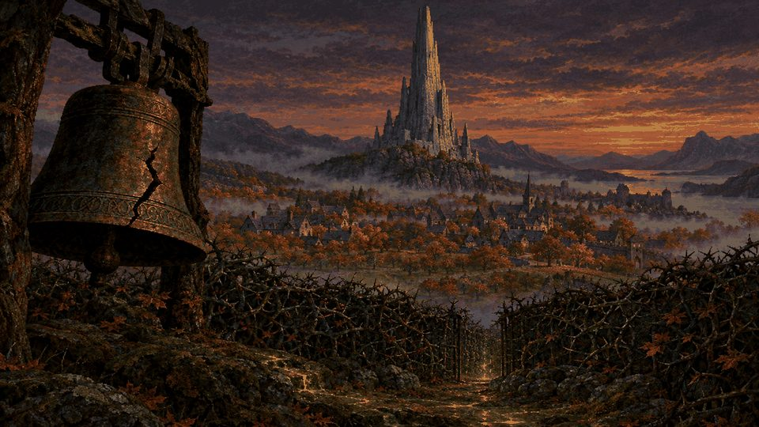
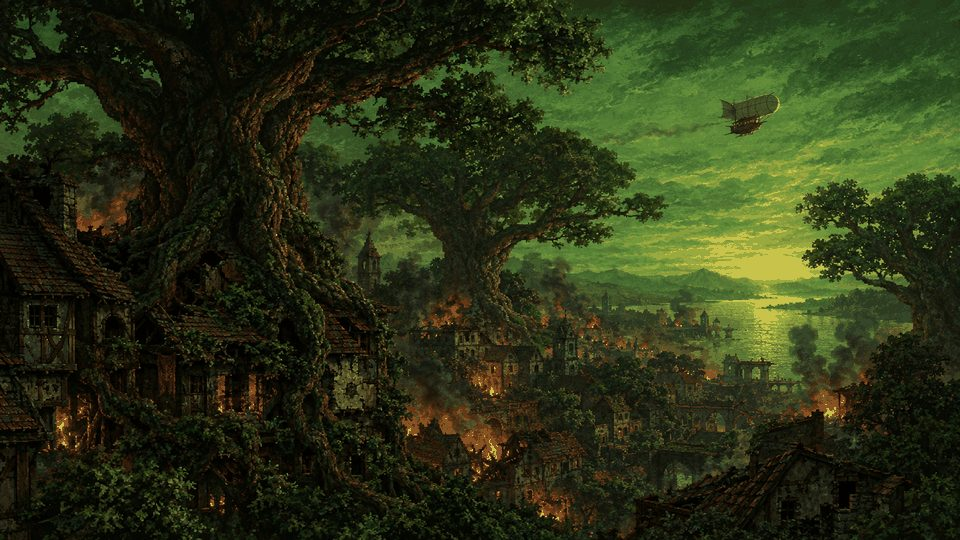

Move the mouse to look · rest it at an edge to keep turning · Esc for Controls

Echoes of the
Shattered Octave
Book One · The Silenced Province
A first-person role-playing game in the manner of 1996. Click to let the sound in.
Press Enter or click to continue

Grab the Line